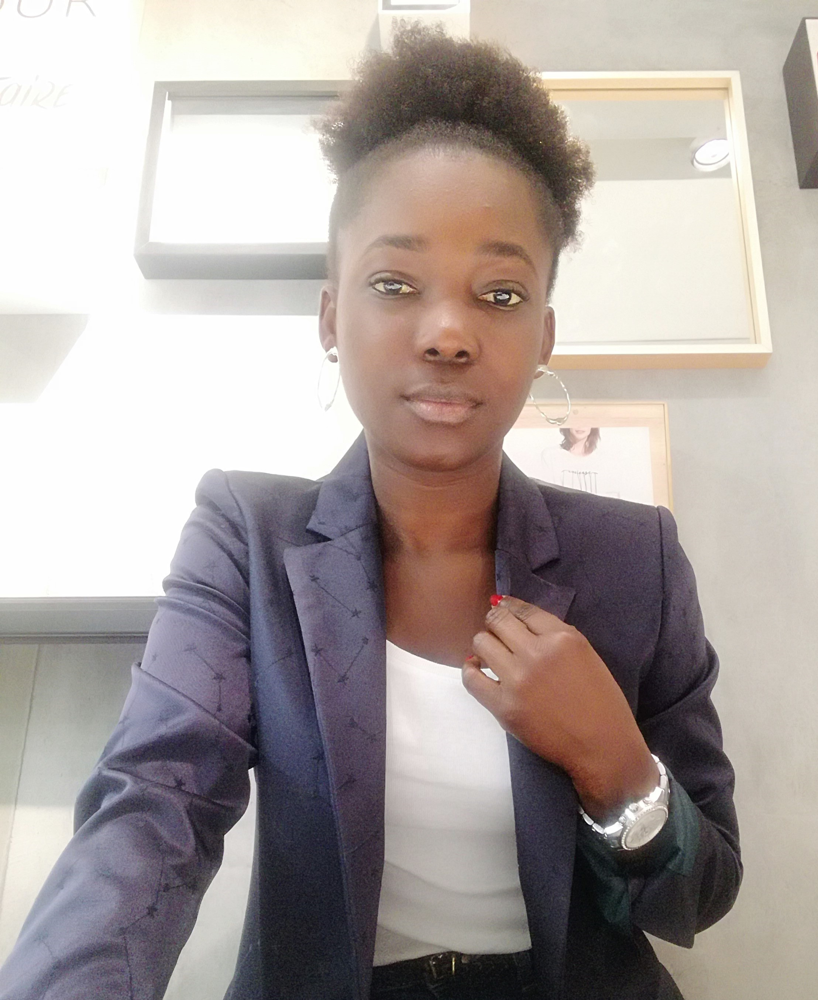

The Doctors is a Group born out of neccessity. 'The Doctors' derives from the Italian expression 'I Dottori', meaning a group of graduates. This Group was born to tell the African story to Africans and to whoever wants to listen. A Group of friends with strong ties to the Continent who are passionate about the beauty, potential and the state of affairs. It is our core belief that Africa's voice must be heard through data, statistics and science. We dig deeper into themes where the African part is a mere anecdote and an asterics. We believe in being a voice for 500 million youth spanning 30 sq kms. Our aim is to develop statistical and empirical evidence on a wide range of topics: from financial, economical to biological and medicinal.
Elhadji Amath Thiam
Senior Auditor
Born and raised in Dakar where I studied until I was about 15 years before I moved to Italy to join my parents and continue my studies. I am currently a Senior Auditor

Esther Koko Nina Kouassi
Interior Designer
Mon pays natale dont mes origines est la Côte d'Ivoire. Arrivé en Italie à l'âge de 8 ans, d'où j'ai entrepris des études qui fait de moi un géomètre bâtiment/dessinatrice 2D et 3D, un métier qui me passionne tant. J'adore voyager à la découverte de nouveaux locaux. J'ai pour passion l'aménagement intérieur, faire la cuisine et la couture.
Kwaku Adjabeng Frimpong
ESG Investments Data Analyst
I was born and raised in Accra, Ghana. Obtained my BSc in Italy and my MSc in England. I worked as a Data Analyst. I am now working as ESG Investments Analyst. I love travelling and experiencing new cultures
Kouassi Kouamé
MSc Enterprise Management Student
Born and raised in Ebounou, Ivory Coast. Mother of Avikam and Father of N'zima descent. I played for the Youth Team of Internazionale FC. I hold a BSc. in Economics and Business and worked as Executive Research Analyst at TNS Kantar. I am now pursuing my MSc degree in Enterprise Management.
Osayamen Joy Omigie
Experimental Biologist
From Benin-city, Nigeria. I reside in Milan Italy. I achieved my master's degree in Experimental and Applied Biology from the University of Pavia in Italy. I have a lot of hobbies but singing and travelling definitely stand out.
Roberto Olayemi Oyedeji
Product Marketing Specialist
Born in Treviglio, Italy. I have two degrees, one in BSc, Economics and another in MSc, Business Administration. During my University studies I did a year Exchange Programme in Andalucía, Spain. Apart from English and Italian, I also speak fluent Spanish. Working in a Software Vendor Company for the Insurers Company as a Product Marketing Specialist.